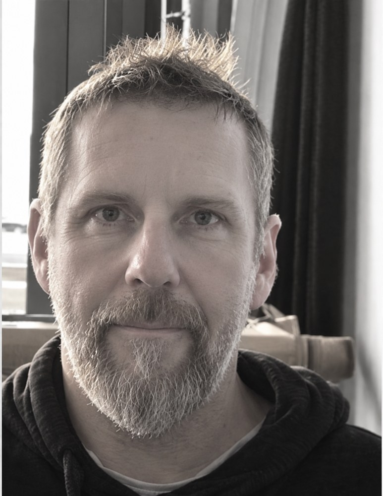

Vincent MURPHY

À propos de Vincent MURPHY
Vincent MURPHY est un expert technologique senior et entrepreneur franco-irlandais basé près de Toulouse. Fort de plus de vingt ans d'expérience chez Orange, son parcours associe recherche et développement, pilotage de projets informatiques, systèmes d'information d'entreprise, intelligence artificielle et cybersécurité.
Son expertise couvre les systèmes d'information RH, l'intégration de solutions internes et SaaS, les API, l'IAM/SSO, le cloud et les architectures sécurisées. Il s'intéresse particulièrement aux applications de l'intelligence artificielle agentique dans l'entreprise.
Avant de rejoindre France Télécom en 2004, il a travaillé en Irlande comme ingénieur indépendant dans les réseaux et télécommunications, notamment sur le déploiement de réseaux radio.
En 2026, il figure parmi les lauréats du Skills Event 2026 d'Orange, événement international de développement des compétences réunissant des collaborateurs autour notamment de l'intelligence artificielle, de la cybersécurité, de la data et du cloud.
Domaines d'expertise
Parcours professionnel
Formation
Honours
Honours
Distinctions
Innovation & R&D
Travaux d'invention réalisés dans le cadre de France Télécom R&D / Orange Labs.
Présentation de la Livebox v2 et du Universal Decoder lors d'Orange Collections 2009.
Présentateur au Broadband World Forum 2009.
Rechercher les brevets sur Espacenet – European Patent Office
Entrepreneuriat
Fondateur de Murphy Rentals, une activité dans le secteur de la location immobilière en France. Cette initiative entrepreneuriale complète un parcours consacré aux technologies, à l'innovation et à la conduite de projets.
 DUNAVRYN
DUNAVRYN
Initiative technologique européenne indépendante développant ATS (Agent Trust Signal), une plateforme de sécurité des dépendances IA associant renseignement sur les cybermenaces et preuves de conformité via une API par abonnement.
Intelligence behind trust.
Découvrir Dunavryn ↗Loisirs & centres d’intérêt
Moto, voyages à moto, voyages, squash et moments en famille.